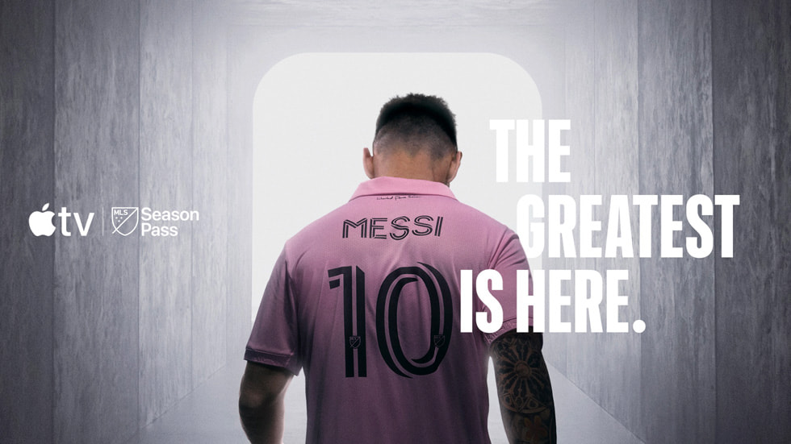
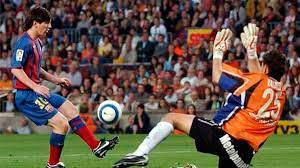
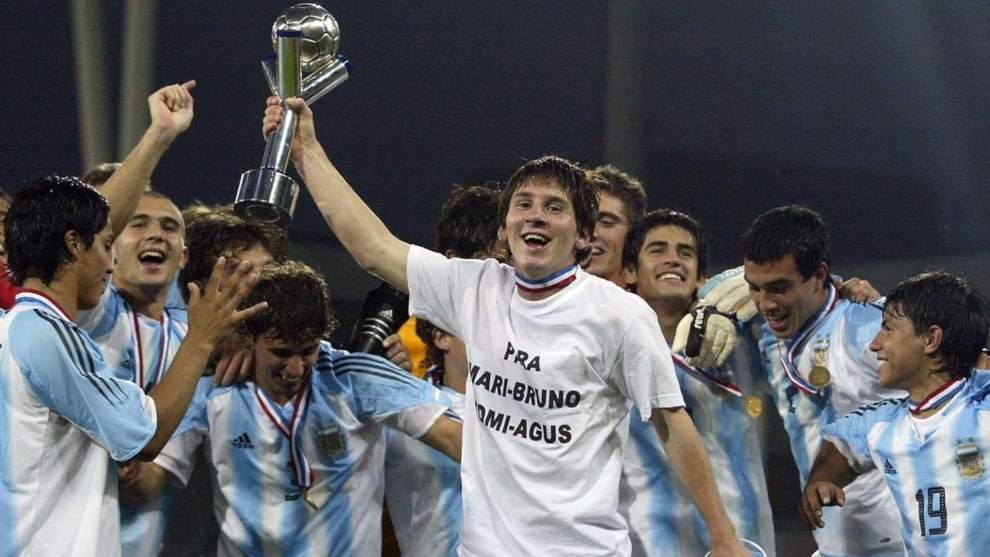
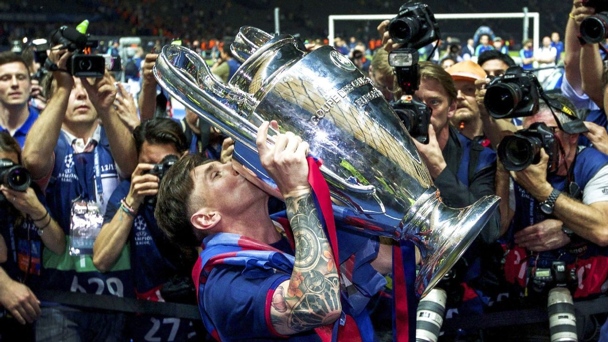
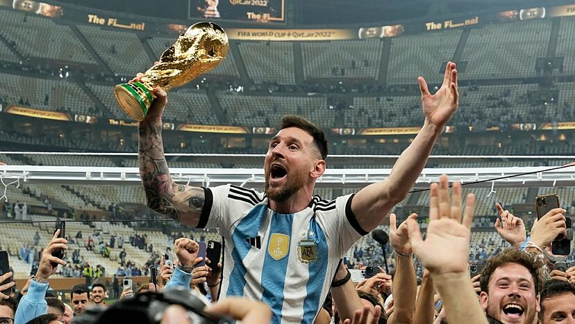

MESSI

Lionel Andrés Messi Cuccittini, conocido como Leo Messi, es un futbolista argentino que juega como delantero en el Inter Miami de la Major League Soccer. Es también internacional con la selección de Argentina, y es capitán de ambos equipos.Es el jugador en la historia del fútbol con más títulos oficiales.
PRIMER GOL DE MESSI
El 1 de mayo de 2005 la Pulga convirtió su primer gol, a pesar de que debutó oficialmente en el 2004, y en su carrera el argentino tuvo un recorrido fantástico, al igual que la pelota de esa primera anotación ante Albacete.

PRIMER TROFEO
PRIMEROS TROFEOS DE MESSI
Temporada 2004-05: 2 títulos (LaLiga y Mundial Sub-20)En su temporada inaugural con el primer equipo del Barcelona, Messi conquistó la Primera División de España y fue su primer trofeo con la escuadra culé.

TROFEOS DE MESSI A NIVEL DE CLUBES
Messi ha conquistado un total de 43 títulos oficiales a lo largo de su carrera: 35 con el FC Barcelona, tres con el PSG, uno con Inter Miami, tres con la selección argentina, uno con la selección argentina sub-20 y otro con la sub-23.

CHAMPIONS DE Messi
En su extraordinaria carrera en el FC Barcelona, desarrollada entre 2004 y 2021, Lionel Messi ganó cuatro veces la UEFA Champions League: en 2006, 2009, 2011 y 2015.

BALONES DE ORO
El jugador campeón del Mundo con su selección en la pasada cita de Qatar 2022, colecciona Balones de Oro, pues en sus vitrinas acumula un total de 7. (2009, 2010, 2011, 2012, 2015, 2019 y 2021).

BOTAS DE ORO
Cabe resaltar que, Messi ganó el Balón de Oro en siete ocasiones: 2009, 2010, 2011, 2012, 2015, 2019 y 2021.

MUNDIAL DE MESSI
Lionel Andrés Messi Cuccittini, conocido como Leo Messi, es un futbolista argentino que juega como delantero en el Inter Miami de la Major League Soccer. Es también internacional con la selección de Argentina, y es capitán de ambos equipos.Es el jugador en la historia del fútbol con más títulos oficiales
